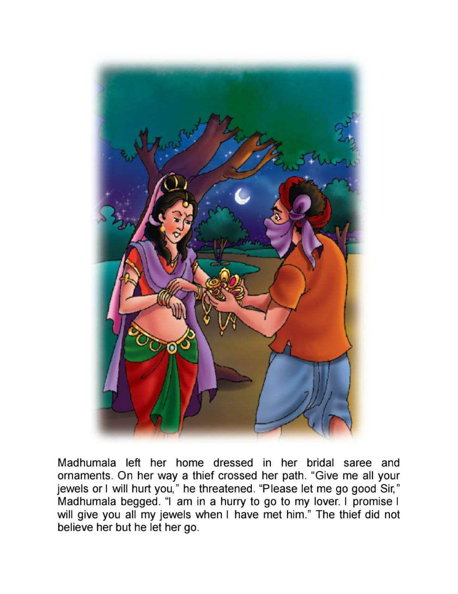
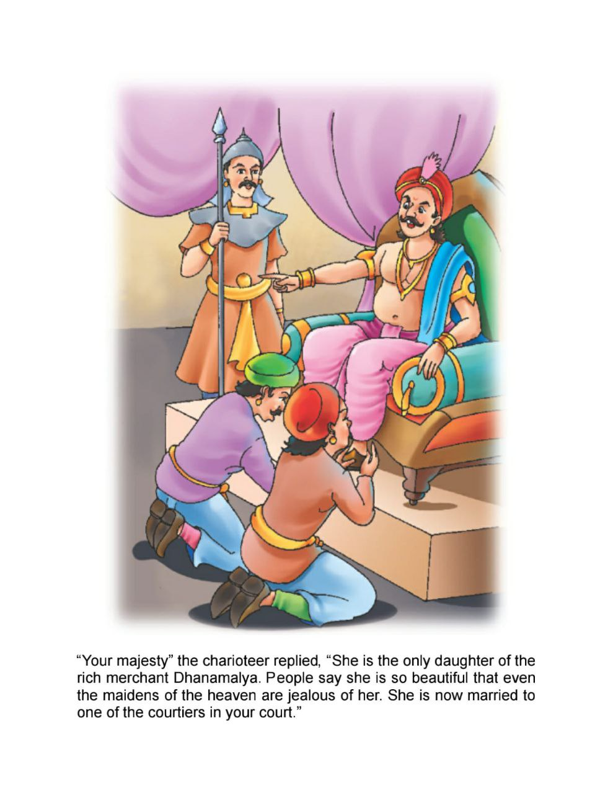

22. Hair in the Mattress
|
|
Following him Vikram came to the same tree, got him off the tree, put him on
his shoulder and started walking. Vikram was walking fast. Vaitaal said -
"Vikram, I tell you a story just to pass time.
|

|
|
There lived a religious Braahman in Magadh Desh. He had two sons. Both were
very learned. The first one could tell by touch only as what was the thing. He
could tell what was in a safe box just by smelling it. This boy earned money
by telling things inside the earth. He could tell by smelling the earth where
the money was kept. People came, took him along with them. He took his fees
and told them whatever it was. Thus he could tell by smelling the earth that
whether there will be sweet or salty water if a well was dug there. Wealthy
people dug their wells on his advice only.
|

|
|
His second son knew women. He could tell her nature just by looking at her, so
people took his opinion while marrying. This boy also earned a fair amount of
money by his this quality. Both brothers had extraordinary smelling power.
|

|
|
Vikram, Whoever has come in this world, has to go. Their father fell seriously
ill. Both brothers served him very well. The Vaidya (traditional doctor) asked
them to bring a tortoise so that he could treat him with that. Both brothers
refused to bring tortoise because of its smell, so a servant was sent to bring
it. The king's servant took that servant away to the king. Both brothers went
to get him freed. They pleaded their case.
|
|
Page 22 Next Page
|